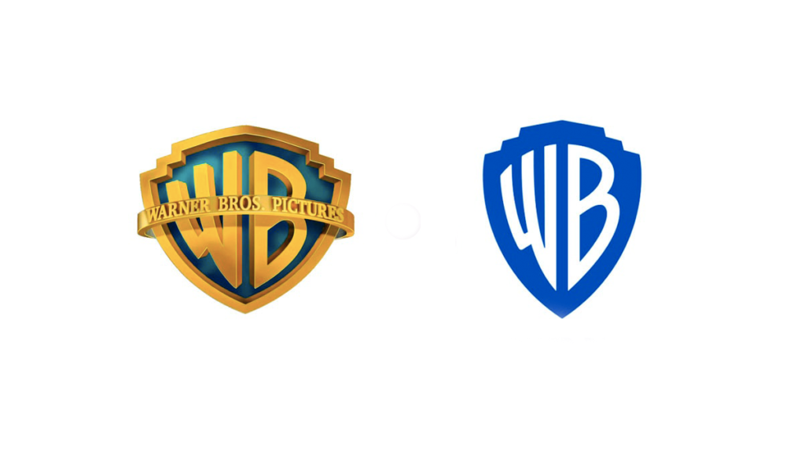
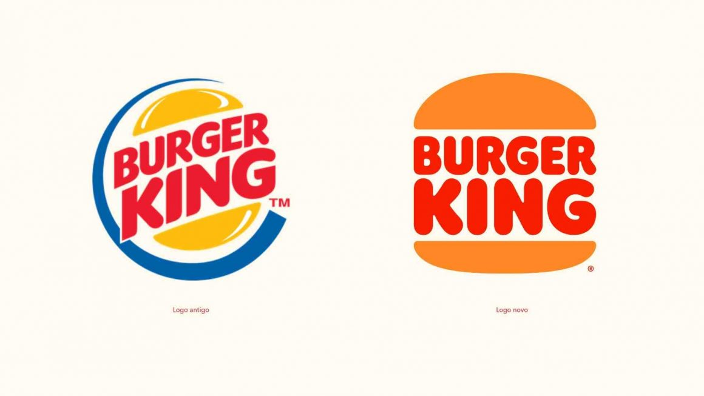
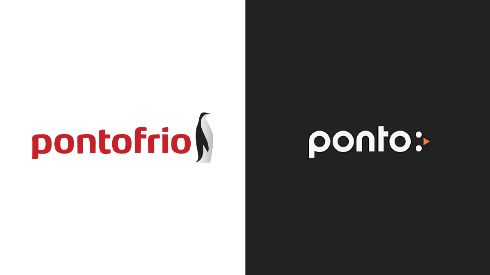

O movimento minimalista surgiu nos anos 60 nos Estados Unidos, e vem se tornando cada vez mais popular desde o começo dos anos 2000. Ele baseia-se em diminuir drasticamente os níveis de consumo, adquirindo apenas os objetos necessários para uma vida plena.
Os adeptos do minimalismo priorizam uma vida mais simples e focada em seus reais interesses, realização pessoal e autonomia.
Minimalismo também pode ser referir a uma estética, ou seja, à aparência que as coisas possuem. Nesse caso, uma estética "clean", simples e com cores neutras, utilizando um mínimo de recursos e elementos.
Essa estética pode ser aplicada em diversas áreas da arte, incluindo o design, e é utilizado cada vez mais pelas marcas, exercendo grande influência em vários campos de atividade do design, como a programação visual, o desenho industrial, na arquitetura, etc.
A arte minimalista se concentra no uso de formas simples, preferencialmente geométricas, evitando elementos metafóricos excessivos. Seu objetivo principal é mostrar a realidade física ao espectador, criando uma separação entre os fatos e as emoções. Ela valoriza as formas e as cores, utilizando geometria e, às vezes, repetições simétricas.
A arte minimalista pode ser apresentada em duas ou três dimensões, o que a diferencia das formas tradicionais de arte. Por isso, é muito popular e apreciada no meio artístico.
Já o design minimalista segue uma estética limpa, baseada no princípio de "menos é mais". Ele remove detalhes extravagantes e layouts complicados, utilizando composições simples e limpas, com uma ou duas cores. Os logos minimalistas são fáceis de processar e memorizar, sendo preferidos pelo nosso cérebro.
Eles transmitem imediatamente a mensagem desejada na criação da identidade visual da marca, tornando a comunicação mais fácil.
Quando aplicamos essa ideia artística ao campo das marcas e da identidade visual, percebemos que o minimalismo desempenha um papel importante ao simplificar e facilitar a compreensão de uma interface, trazendo mais clareza para a marca e adaptando-se às novidades do mercado. O logotipo se torna o protagonista e deve ser estratégico, transmitindo versatilidade e adaptabilidade.
Antigamente, os logos costumavam ser complexos, cheios de nuances e significados ocultos, exigindo tempo para serem absorvidos. Agora, a tendência é o oposto. Tudo o que é complexo deve ser descartado, pois vivemos em uma era de sobrecarga de informações.
Quanto mais simples for um logo, mais agradável ele será. Os logos minimalistas incorporam um conceito de design fundamental único e podem ser facilmente aplicados em diferentes fundos e mídias. Muitas marcas adotam o minimalismo para transmitir sua visão de mundo e valores.
Embora a criação de um logotipo minimalista possa ser mais complexa e trabalhosa, pois requer a escolha de elementos mais limitados para impressionar e transmitir uma mensagem direta ao público, é uma abordagem eficaz para se destacar em meio à concorrência acirrada nas redes sociais.
Plataformas como Instagram e Facebook desempenham um papel importante para as empresas cultivarem sua marca e se conectarem intimamente com seu público. O minimalismo também está presente em marcas de e-commerce, onde fotografia, logotipos e design web são fortemente influenciados pelas dimensões de uma tela.
Em 2021, várias marcas passaram por mudanças em seus logotipos para se adaptarem às tendências atuais. Por exemplo, a Nissan abandonou seu antigo logo em 3D com baixo relevo em favor de linhas finas e fusões de texto.
O Ponto Frio, marca de eletrodomésticos, modernizou sua identidade visual, mantendo uma comunicação digital objetiva, porém simples e interativa. Já a Warner Bros apresentou uma nova identidade visual minimalista, visando a consistência em todas as divisões da empresa e enfrentando a concorrência dos serviços de streaming.
Abaixo está imagens de mudanças de logotipos de diversas marcas:

Warner Bros.

Burger King

MasterCard
Renault

Pontofrio